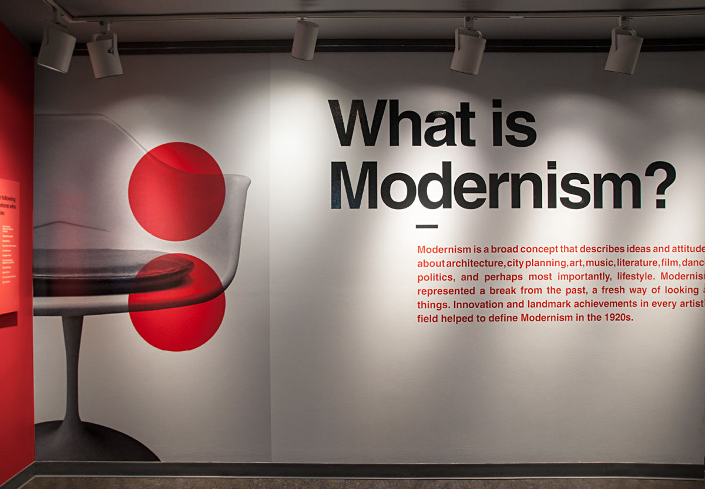
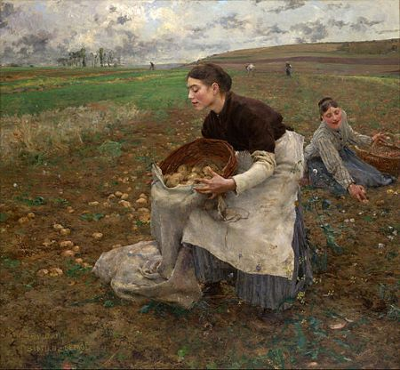
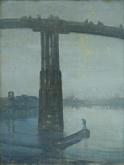
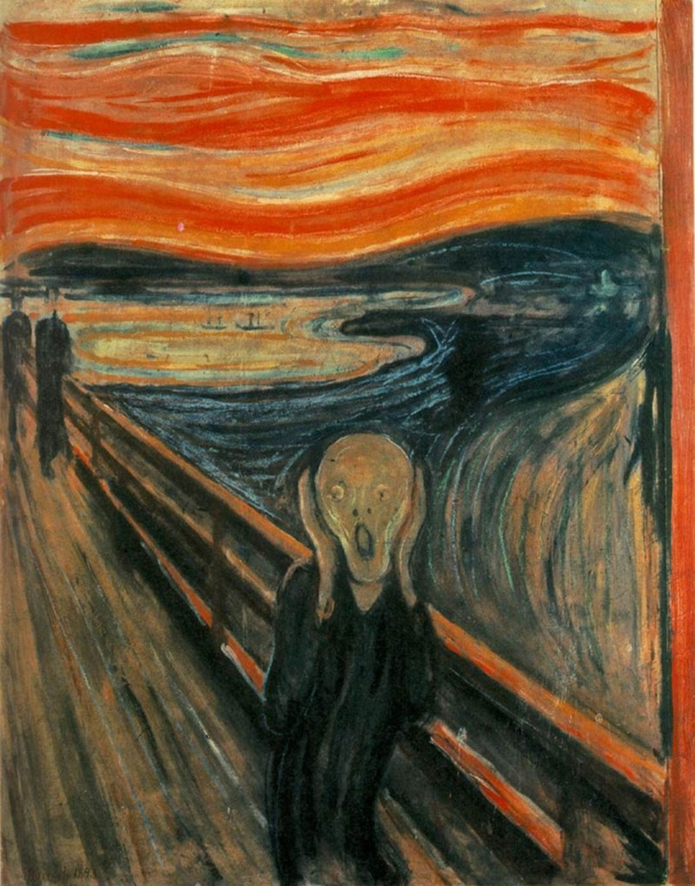
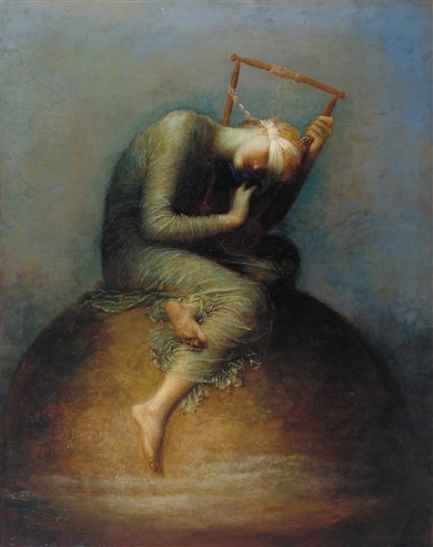
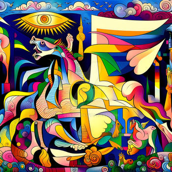
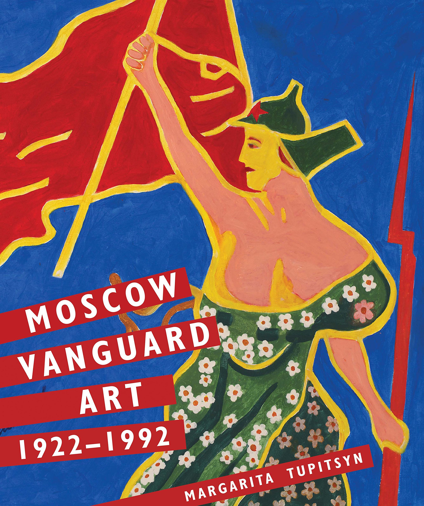

Comparación de Estilos y Movimientos Literarios
Presentación HTML5 utilizando reveal.js
- El modernismo fue un movimiento literario que surgió a finales del siglo XIX, especialmente en América Latina y España.
- Se caracterizó por su énfasis en la libertad creativa, la experimentación formal y la ruptura con las convenciones tradicionales.

- Los modernistas exploraron temas como el amor, la naturaleza, el simbolismo y la decadencia de la sociedad.
- Destacados autores modernistas incluyen a Rubén Darío, José Martí y Amado Nervo.
- Los realistas se centraron en temas como la vida cotidiana, las clases sociales, el trabajo y la política.
- Autores destacados del realismo incluyen a Honoré de Balzac, Gustave Flaubert y Emilia Pardo Bazán.

- El realismo influyó en otros movimientos literarios, como el naturalismo y el regionalismo.
- Las obras realistas se caracterizaban por su atención meticulosa a los detalles y su análisis profundo de la psicología humana.

- Los simbolistas buscaron trascender la realidad visible y explorar el mundo de los sueños, la imaginación y el subconsciente.
- Autores destacados del simbolismo incluyen a Charles Baudelaire, Stéphane Mallarmé y Arthur Rimbaud.

- El simbolismo influyó en movimientos posteriores, como el surrealismo y el expresionismo.
- Las obras simbolistas se caracterizaban por su estilo evocador, su atmósfera misteriosa y su uso frecuente de imágenes y metáforas sugestivas.

- Los vanguardistas exploraron nuevas formas de expresión, como el collage, la escritura automática y la poesía visual.
- Autores destacados del vanguardismo incluyen a Guillaume Apollinaire, Tristan Tzara y André Breton.

- El vanguardismo tuvo un impacto duradero en la literatura y el arte del siglo XX, influyendo en movimientos posteriores como el postmodernismo y el posvanguardismo.
- Las obras vanguardistas se caracterizaban por su radicalidad, su irreverencia y su desafío a las normas establecidas.
